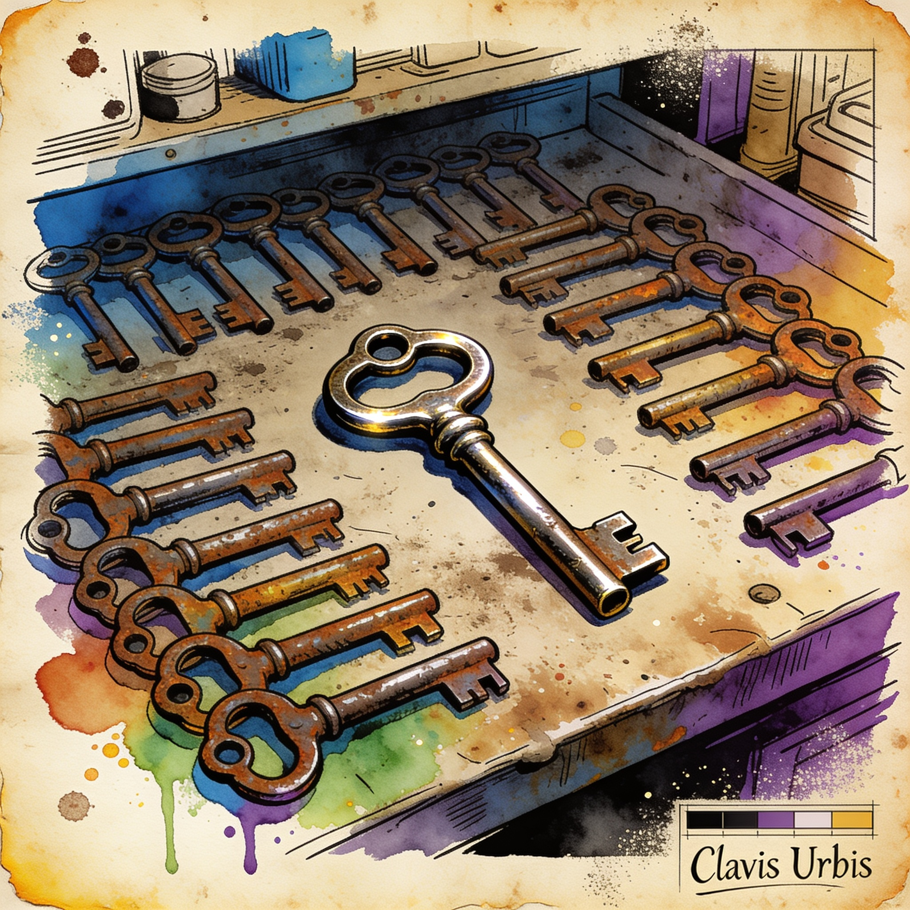

Self-host alert
Open WebUI v0.12.5 ships security fixes every deployment should install now
The most-used front-end for local AI stacks released v0.12.5 with unlisted security fixes that maintainers urge all deployments to install immediately. The update also adds an admin analytics session explorer with per-chat token and tool-call breakdowns, paginated notes with live collaborative presence, animated ComfyUI image support, and knowledge base commands up to 10x faster. Self-hosters on pinned Docker deployments should review the release notes before upgrading.